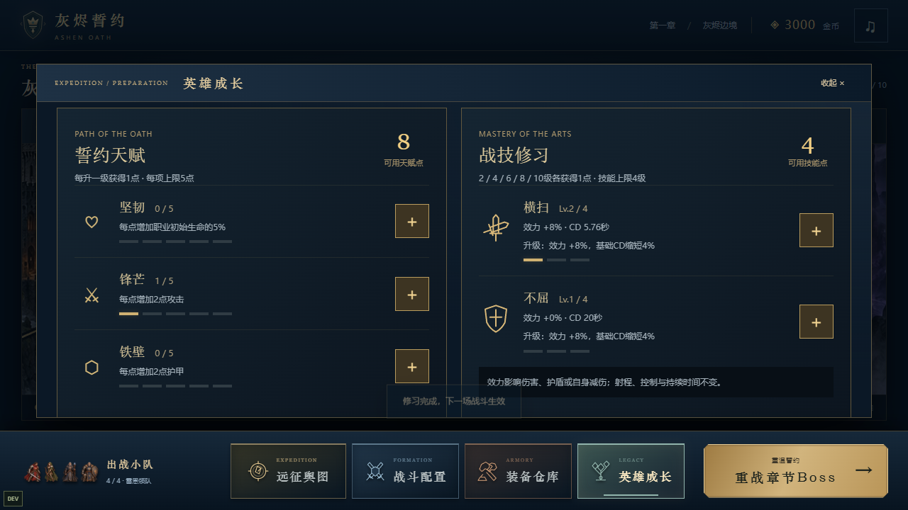
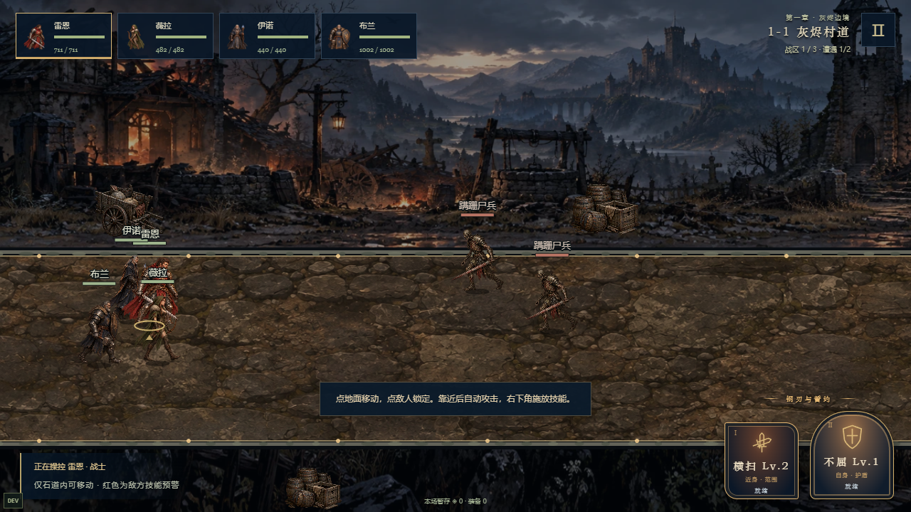
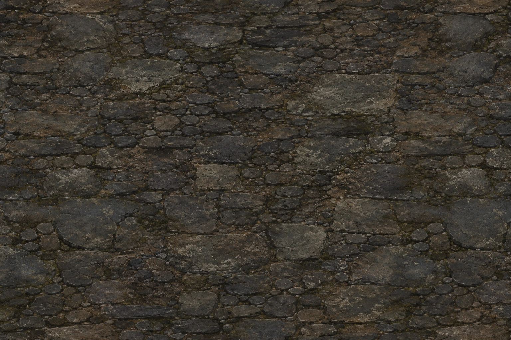
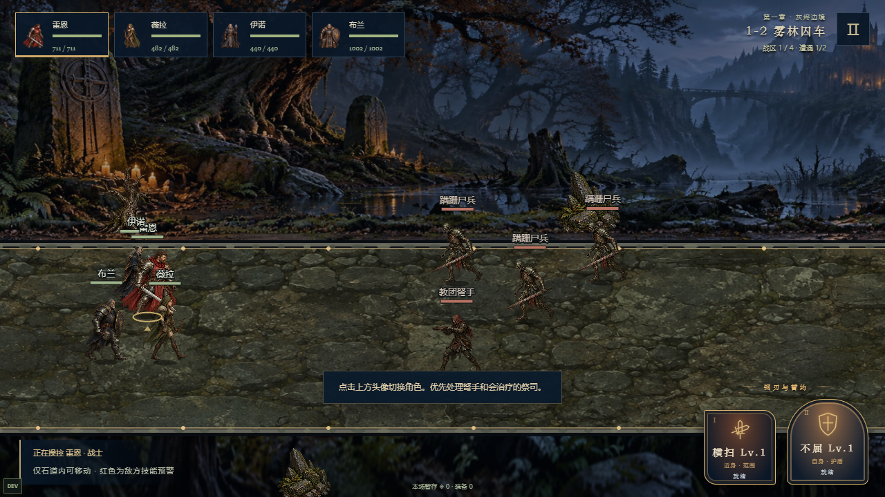
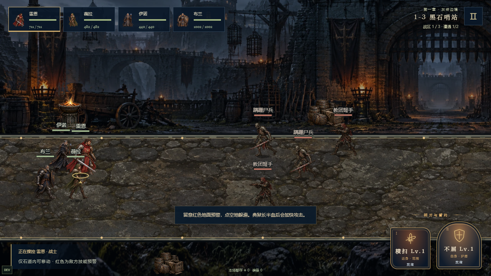
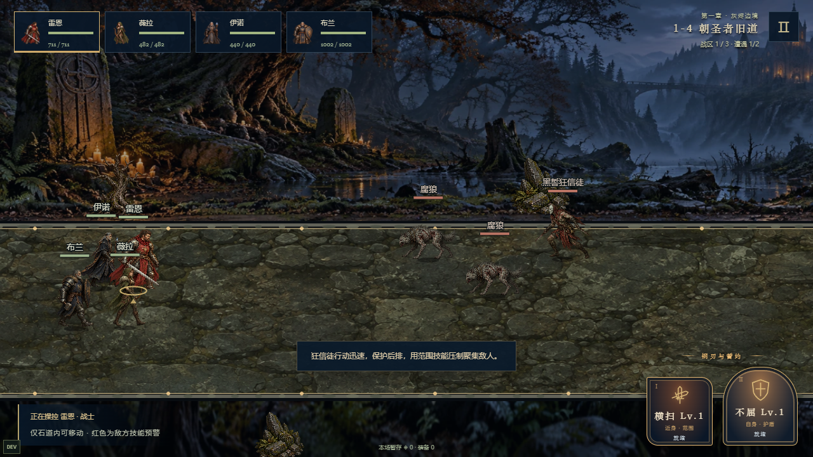
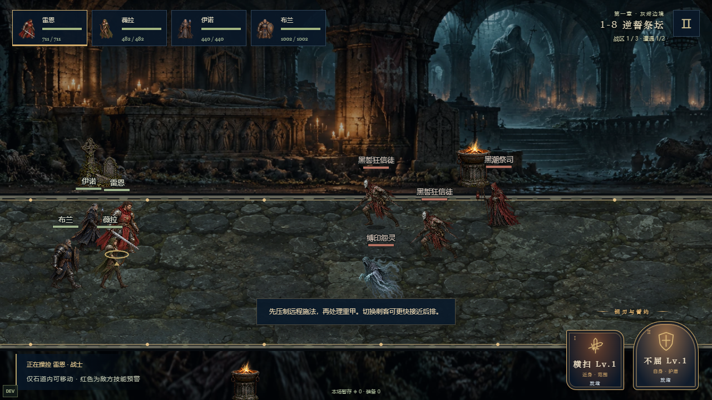
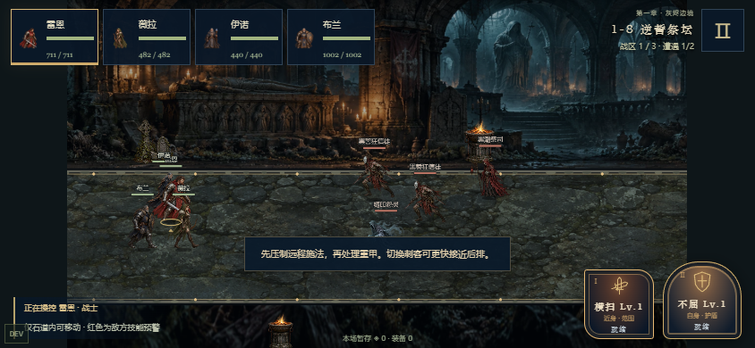

普攻出手增益0.15、普通命中0.12、技能0.57（统一主音量之前）；限制连续叠加，五职业成功施法时偶尔触发合成发力。天赋和技能升级位于英雄成长。建筑背景与真实石道路面分层，人物再缩小约15%。完整素材索引 · v009历史对照


发力声为本机SAPI合成与降调处理，非真人配音。此处原始文件不包含游戏内混音衰减，试听请从低音量开始。文件分析与浏览器解码不能代表真人听感验收。






图像原稿与完整prompt：08_生成原稿/v010。真源为public/assets/v010、public/audio/v010；旧背景/动作/立绘继续使用v008/v009。文件记录见catalog，规则和验证见项目docs。